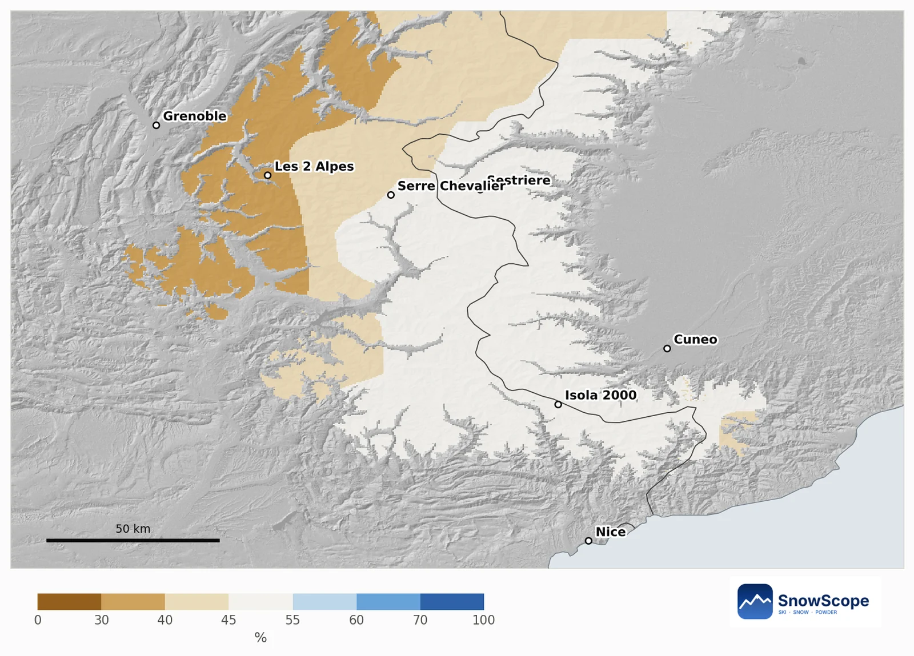

Fresh snow in Stubai Glacier next week? A small 14 cm at the top (23–29 November 2026)
Stubai Glacier gets a small share of next week's snow: 14 cm at around 3100 m in the middle of our forecast, 12 cm at mid-mountain and 12 cm down at 1800 m. The best of it should come on Thursday 26 November.
See the live snow forecast for Stubai Glacier in the SnowScope appSnow depth, powder alerts and the 3D map, free.When and where to ski Stubai Glacier
The snowiest day up top is Thursday 26 November, with 4 cm in the middle of our forecast (up to 8 cm). That is a fresh coat on the groomers, nothing more.
The snow lies best on the Schaufelspitze and the Gaiskar glacier. For the softest turns, look to the glacier runs, the coldest slopes near Innsbruck. Lower down, the Mutterberg valley station will be the first to suffer if the air turns mild.

Next week, height by height
Read from the top down: 14 cm near 3100 m, 12 cm near 2500 m, 12 cm near 1800 m. The low-to-high spread is 2–25 cm at the top and 2–21 cm at the base.
Most of the total arrives on Wednesday 25 (3 cm, up to 5), Thursday 26 (4 cm, up to 8) and Sunday 29 (3 cm, up to 6), counted at the top as the middle of our forecast and the high case.
First, this week's snow
Little lands in Stubai Glacier before the weekend: 9 cm at the top from Tuesday 17 to Friday 20 November. Most of what the resort gets this fortnight comes in the second week.
Down at the base
Little is lost on the way down: 12 cm around 1800 m against 14 cm up high. On these numbers the precipitation falls as snow almost everywhere in Stubai Glacier.
The Stubai Glacier is the area Innsbruck skiers use in autumn and early winter.
Next door, the same week
For comparison, the upper slopes of the closest big resorts collect Sölden (12 km away) 13 cm, Obergurgl (14 km away) 13 cm and Hintertux (42 km away) 14 cm; Stubai Glacier sits at 14 cm.
Snow will not decide between these resorts next week. Height, aspect and which lifts are open will.
Confidence, in plain words
Low. At the top our forecast spans 2 to 25 cm: one version of the week brings a decent fall, the other almost nothing. Check again midweek before committing.
The days closest to now are the most reliable; the end of the week is the least.
Tips for skiers
- Off the groomed runs, new snow means new avalanche risk: the regional avalanche service of the province is the reference.
- Check the resort's own opening date and lift status: snow on the mountain does not mean lifts are running.
- With 14 cm at the top, this is not a week to chase powder in Stubai Glacier.
More maps (external sites)
About these numbers
Snow numbers: our two-week snow forecast issued on 16 November 2026, read at three heights of the resort (top, mid-mountain, base). Each total is the middle of a range, with a low and a high case. These are estimates for the slopes, not resort measurements, and forecasts move from day to day: check the live map before you go.
Cite this report
For research, teaching or the press: the numbers and charts are free to reuse under CC BY 4.0 with this citation.
SnowScope (2026), Fresh snow in Stubai Glacier next week? A small 14 cm at the top (23–29 November 2026), https://snowscope.app/blog/en/2026/11/stubai-snow-forecast-next-week-23-29-november-2026.html, accessed 2026-11-16
SnowScope (Atlas Labs). (2026, November 16). Fresh snow in Stubai Glacier next week? A small 14 cm at the top (23–29 November 2026). SnowScope snow reports. https://snowscope.app/blog/en/2026/11/stubai-snow-forecast-next-week-23-29-november-2026.html
BibTeX
@misc{snowscope2026stubaisnowforecastnextwe,
author = {{SnowScope (Atlas Labs)}},
title = {Fresh snow in Stubai Glacier next week? A small 14 cm at the top (23–29 November 2026)},
year = {2026},
month = nov,
howpublished = {\url{https://snowscope.app/blog/en/2026/11/stubai-snow-forecast-next-week-23-29-november-2026.html}},
note = {Published 2026-11-16 11:46 UTC; accessed 2026-11-16}
}· CC BY 4.0 · Methods, data and tools →
Stubai Glacier: snow and temperature by height, this winter vs last (tools) →
Follow Stubai Glacier
Free: a message when fresh snow is coming, and the forecast every morning.
More snow reports

Will the snowpack from the Écrins to the Maritime Alps and Piedmont fill as usual in December 2026? The European seasonal forecast and our map, mountain by mountain.

Livigno's snow today, what the European seasonal forecast says about December, and why height beats a warm month at Christmas.

A cheap 3-day Lake Como plan for December with real 2026-27 prices: trains, ferries, a funicular and a ski day at Piani di Bobbio or Madesimo, what you save compared with Cortina, and the chance of snow at Christmas.